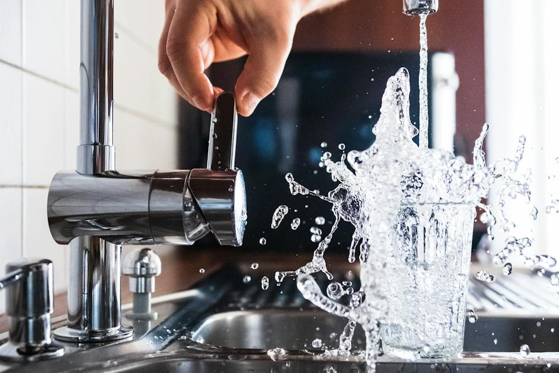
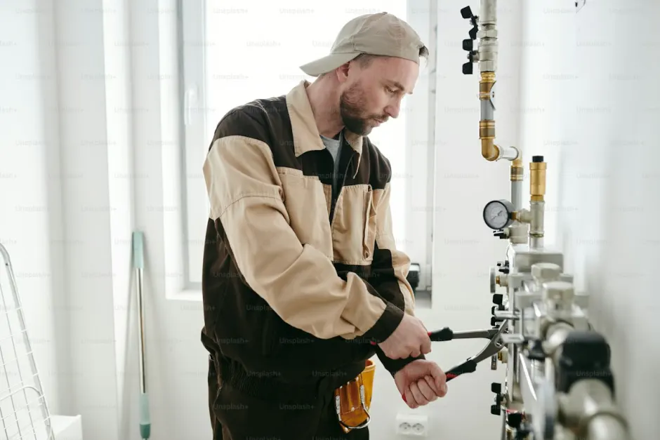

Drain Cleaning in Pine Ridge, Naples, Florida
Specialized residential drain cleaning and main sewer line care for custom estates, acreage properties, and single-family residences throughout Pine Ridge. From navigating long-distance underground sewer laterals to clearing tree root obstructions and luxury fixture blockages, Naples Drain Pros provides discreet, thorough, and dependable local service.
Estate Plumbing CareZIP Code 34108Video Camera Diagnostics
Precision Drain Care for Pine Ridge Estate Properties
Pine Ridge is one of Naples' premier non-gated estate neighborhoods, known for its expansive one-to-two acre lots, mature slash pine canopy, custom luxury homes, and extensive grounds. These expansive property footprints present unique drainage dynamics, including lengthy horizontal sewer runs, multiple bathroom wings, outdoor summer kitchens, and extensive guest house plumbing lines.
When sluggish drainage or gurgling sounds appear, our Naples drain cleaning specialists employ long-reach motorized drain augers, high-definition camera inspection, and professional hydro jetting to safely restore complete, free-flowing drainage across your entire estate.
View Pine Ridge drain services
Pine Ridge Advanced DiagnosticsHigh-definition sewer video cameras and heavy-duty cabling reels capable of inspecting and clearing 100+ foot estate sewer laterals.
Signs You May Need Drain Cleaning in Pine Ridge
Recognizing the early indicators of drainage restrictions helps prevent messy main sewer backups.
Slow-Draining Fixtures
Water pooling in luxury soaking tubs, walk-in showers, or kitchen prep sinks indicates localized trap or branch line buildup.
Gurgling Sounds in Plumbing
Gurgling or bubbling noises from toilets when running a bathroom sink or laundry cycle indicate trapped air struggling past a line restriction.
Recurring Fixture Clogs
Fixtures that require frequent plunging or slow down repeatedly within weeks point to an obstruction farther down the main lateral line.
Unpleasant Drain Odors
Persistent sewer gas smells rising from secondary bathrooms, laundry drains, or cleanouts signal decaying organic residue or venting obstacles.
Professional Drain Cleaning for Pine Ridge Homes
Comprehensive drain cleaning tailored to the expansive layouts and high-capacity plumbing of Pine Ridge estates.
01
Estate Sewer Lateral Cleaning
Thorough mechanical clearing and root removal for extended main sewer lines running across large estate parcels to municipal connections.
02Chef's Kitchen & Disposal Clearing
Scour cooking oils, food particles, and grease from dual kitchen sinks, prep stations, and outdoor summer kitchen drains.
03Master Bath & Shower Clearing
Gently remove accumulated hair, bath products, and mineral scaling from custom rain showers and freestanding tubs.
04Yard & Landscape Drainage
Ensure patio catch basins, courtyard drains, and driveway drainage systems stay clear to manage heavy Southwest Florida rainfall.
Recurring Clogs and Main Line Problems
In Pine Ridge, repeated drainage slow-downs frequently stem from the unique landscape and acreage characteristics of the neighborhood. With mature pine trees, live oaks, and lush landscaping bordering extensive underground pipe runs, root systems naturally seek moisture and nutrients through tiny pipe joints.
Over time, fine root hairs expand into thick clusters that trap toilet paper, soap scum, and solid waste. Simply plunging a fixture does not address roots or internal scaling located 50 to 100 feet down the pipe. Our mainline drain cleaning service utilizes specialized root cutters and high-velocity water jets to clear the full pipe interior safely.
See what to expect on a visit
Thorough Line AssessmentHigh-resolution camera footage allows us to inspect pipe condition and root infiltration before and after clearing.
Drain Camera Inspection and Hydro Jetting
Advanced diagnostic and clearing technology to resolve complex residential drainage challenges.
High-Resolution Camera Audits
Our fiber optic camera travels through your underground sewer lateral, providing real-time video footage of pipe walls, joints, bellies, and root penetrations.
Hydro Jetting Power Cleaning
Specially engineered nozzles blast high-pressure water streams to thoroughly scrub away grease, mineral scale, and sludge without chemical additives.
Safe Assessment First
We always verify the age, material, and structural soundess of your underground piping before deploying high-pressure jetting to ensure complete safety.
Long-Lasting Flow Restoration
Unlike basic snaking that punches a temporary hole, hydro jetting clears the entire circumference of the pipe to help prevent repeat blockages.
What to Expect During a Drain Cleaning Visit
A transparent, respectful customer journey from initial diagnosis to final drainage testing.
Assessment & Questions
We evaluate which fixtures are experiencing slow flow, inquire about recent plumbing history, and locate outdoor and indoor cleanout access points.
Initial Inspection
We inspect the affected drain line, testing flow rates and deploying a sewer video camera when necessary to locate the exact obstruction.
Recommended Approach
We explain the cause of the blockage in plain language and provide upfront pricing options before any work begins.
Professional Cleaning
Using protective floor mats and containment equipment, our technician performs motorized cabling or hydro jetting to clear the obstruction.
Drainage Flow Testing
We run high-volume water tests through connected fixtures to confirm wastewater drains freely and without backup.
Explanation of Findings
We review the work completed, explain any preventive maintenance tips for your property, and leave the work area clean and tidy.
Serving All Pine Ridge Streets & Estate Enclaves
We provide full residential drain cleaning across the entire Pine Ridge community in ZIP code 34108, from Ridge Drive and Myrtle Road to Carica Road and West Boulevard.
Neighboring Service Areas: Pelican Bay · North Naples · Park Shore & The Moorings · All Service Areas
Check Availability →
1234
Pine Ridge Service FleetEquipped for estate acreages, long-run sewer lines, and luxury residential plumbing.
Frequently Asked Questions
Common questions from Pine Ridge residents regarding estate drain cleaning, root removal, and sewer diagnostics.
Call +1 (239) 688 0557Why do long sewer lateral lines in Pine Ridge estates require specialized cleaning equipment?
Pine Ridge homes are typically situated on expansive one-to-two acre parcels, meaning sewer lateral runs from the home to the municipal main or collection point can extend 100 to 200 feet or more. Clearing these extended distances requires commercial-grade, heavy-duty motorized cabling and high-capacity hydro jetters equipped with long-distance reels.
How do pine and oak tree roots infiltrate underground sewer pipes in Pine Ridge?
The signature mature pine trees and spreading live oaks of Pine Ridge feature extensive root systems that seek moisture and nutrients. Roots exploit tiny hairline gaps in underground pipe joints, expanding as they absorb water and creating dense root balls that trap toilet paper and solid waste.
Will hydro jetting damage older or newer residential drain pipes?
When properly calibrated by trained technicians, hydro jetting is completely safe for standard plumbing materials including PVC, cast iron, and ABS. We always conduct a preliminary video camera inspection to verify pipe integrity before introducing high-pressure water.
What is the difference between a localized fixture clog and a whole-house main line backup?
A localized clog affects only one specific fixture (like a single bathroom sink or shower trap) while other fixtures in the home drain freely. A main line backup affects multiple plumbing fixtures simultaneously, often causing lower-level showers or tubs to fill when upper-level fixtures or washing machines discharge.
How often should preventative drain maintenance or camera inspections be scheduled?
For large single-family estates with mature trees near sewer runs, a preventative sewer camera inspection or routine line maintenance every 18 to 24 months helps catch minor root infiltration or scale buildup before an emergency backup occurs.
What precautions are taken to protect high-end floors and fixtures during indoor drain service?
Our technicians utilize protective floor coverings, shoe covers, and containment mats around every work area. Equipment is wiped clean before entering your home, and we thoroughly test and sanitize the work zone upon completing the service.
Need Drain Cleaning in Pine Ridge?
Contact Naples Drain Pros today for prompt, professional estate drain cleaning, root clearing, and sewer inspection in Pine Ridge, Naples, FL.
Schedule Pine Ridge Service
Get in touch with our team today for drain snaking, hydro jetting, and sewer camera inspections in Pine Ridge.